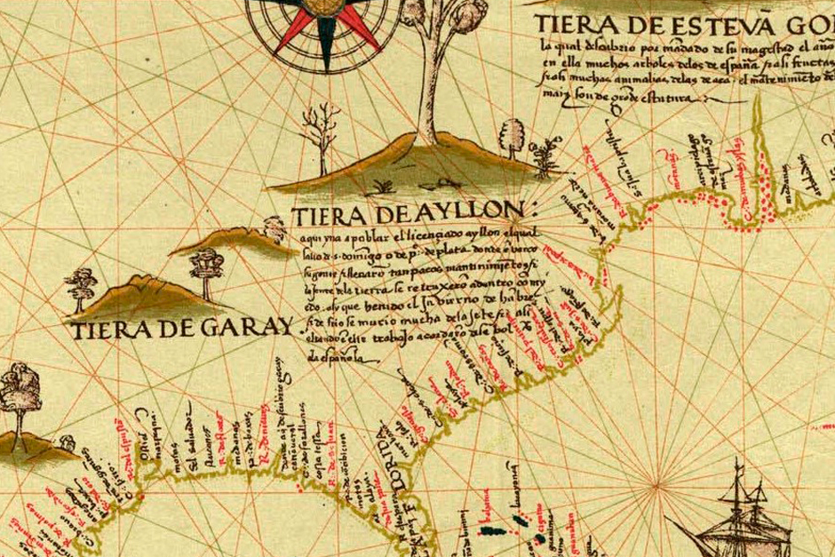

This page is a guide to learning my piece 1526 - Nunca la tiera de Ayllón on a tapping Instrument such as the Chapman Stick or the acoustic Dragonfly DFA.
There is a score , tablature, and fretboard diagrams to help youi learn the song. This song lives in a range that should adaptable to other tapping instrument tunings.
The Song is in D minor.
The ♪ score & tabs ♪ have the basic structure:
Gm6/9 - Gm♭6/9 - Gm6/9 - B♭/D
The chord changes are
Dm - A7 - Dm - C - F6 - C - Dm A7 - Dm
And follow a La Folia style theme. The F6 chord is a little unusual , it's traditionally just F major.
If you want to improvise/extend the La folia section, You can start off using D natural minor to improvise in , shifting to D harmonic minor in the A7 bars if you want.
Dm9 - B♭add4 - Asus2sus4 - Absus2sus♯4Note: This is the same basic chord sequence as that used by the song "Dogs" by Pink Floyd
If you are curious about the title, you can find out about it at these links. Wikipedia, Zinn Education Project. The fact that La Folia means "folly or madness" is apropos to the title and the story behind it.
-mike hoegeman